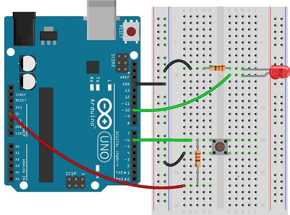
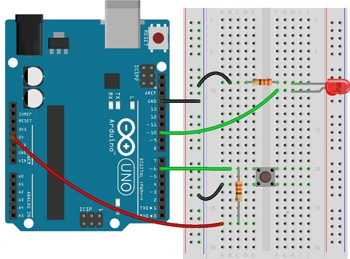

Elementos
Nuestro sistema de control va a contener básicamente tres bloques de dispositivos:
- Elementos de proceso o control: son los que se van a programar, recibirán datos de los elementos de entrada para decidir que realizar con los elementos de salida. En nuestro caso es Arduino.
- Elementos de entrada: serán sensores que se le pueden conectar a nuestro sistema de control, pueden ser: pulsadores, interruptores, finales de carrera, ntc, ldr, etc.
- Elementos de salida: van a ser los actuadores, los que va a decidir nuestro programa poner en funcionamiento y de que manera o parar, como: diodos leds, zumbadores, motores, etc.
 
